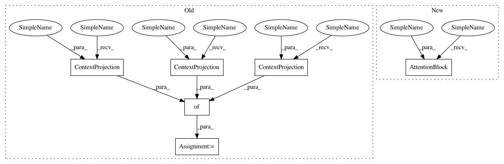

3475ebda310856204ac5ed2bc585ebb6b05b0b9a,research/object_detection/meta_architectures/context_rcnn_meta_arch.py,ContextRCNNMetaArch,__init__,#ContextRCNNMetaArch#Any#Any#Any#Any#Any#Any#Any#Any#Any#Any#Any#Any#Any#Any#Any#Any#Any#Any#Any#Any#Any#Any#Any#Any#Any#Any#Any#Any#Any#Any#Any#Any#Any#Any#Any#Any#Any#Any#Any#Any#Any#Any#,36
Before Change
is_training=is_training,
freeze_batchnorm=freeze_batchnorm)
self._atten_projs = {"key": context_rcnn_lib.ContextProjection(
attention_bottleneck_dimension, freeze_batchnorm),
"val": context_rcnn_lib.ContextProjection(
attention_bottleneck_dimension, freeze_batchnorm),
"query": context_rcnn_lib.ContextProjection(
attention_bottleneck_dimension, freeze_batchnorm)}
@staticmethod
def get_side_inputs(features):
Overrides the get_side_inputs function in the base class.
After Change
is_training=is_training,
freeze_batchnorm=freeze_batchnorm)
self._attention_block = context_rcnn_lib.AttentionBlock(attention_bottleneck_dimension, attention_temperature, freeze_batchnorm)
@staticmethod
def get_side_inputs(features):
Overrides the get_side_inputs function in the base class.
In pattern: SUPERPATTERN
Frequency: 3
Non-data size: 6
Instances
Project Name: tensorflow/models
Commit Name: 3475ebda310856204ac5ed2bc585ebb6b05b0b9a
Time: 2020-06-29
Author: kaushikshiv@google.com
File Name: research/object_detection/meta_architectures/context_rcnn_meta_arch.py
Class Name: ContextRCNNMetaArch
Method Name: __init__
Project Name: tensorflow/models
Commit Name: 3475ebda310856204ac5ed2bc585ebb6b05b0b9a
Time: 2020-06-29
Author: kaushikshiv@google.com
File Name: research/object_detection/meta_architectures/context_rcnn_meta_arch.py
Class Name: ContextRCNNMetaArch
Method Name: __init__
Project Name: tensorflow/models
Commit Name: 35fda9730bb058d37e1102208322cd68c2160f10
Time: 2020-06-30
Author: kaushikshiv@google.com
File Name: research/object_detection/meta_architectures/context_rcnn_lib_test.py
Class Name: ContextRcnnLibTest
Method Name: test_attention_block
Project Name: tensorflow/models
Commit Name: 35fda9730bb058d37e1102208322cd68c2160f10
Time: 2020-06-30
Author: kaushikshiv@google.com
File Name: research/object_detection/meta_architectures/context_rcnn_lib_test.py
Class Name: ContextRcnnLibTest
Method Name: test_compute_box_context_attention